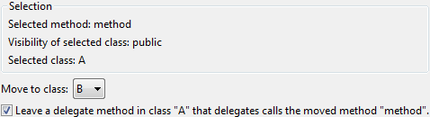

| Option | Description |
|---|---|
| Move to class | Here the target class can be selected among the possible target classes to move the method to. |
| Leave a delegate... | For not changing the interface of the source class a delegate method can be left in place of the moved method. It will foreward the calls. |